sector20 supernovae (22 total)
Each figure has three panels. The top panel shows the transient light curve, the middle panel shows the local background (estimated in an annulus), and the bottom panel shows a "background-model corrected" light curve. Details about the background model are in the README.
The vertical red line marks the time of discovery reported to TNS. Other useful metadata from TNS is in the figure title.
Note that the top and bottom panel are in magnitudes, while the middle panel is in differential flux units. The magnitudes are calibrated to the flux in the reference image used for image subtraction. Thus, flux from the host galaxy is included in these magnitudes.
3-sigma upper limits are plotted as triangles with no errorbars. A typical limiting magnitude is 19.6 in 30 minutes or 18.4 in 200 seconds (for low backgrounds).
The links allow you to download the light curve data as a text file.
More details in the README.
2020aek 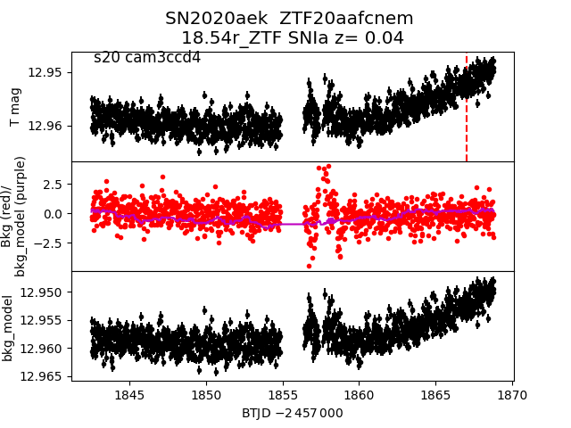 2020wd 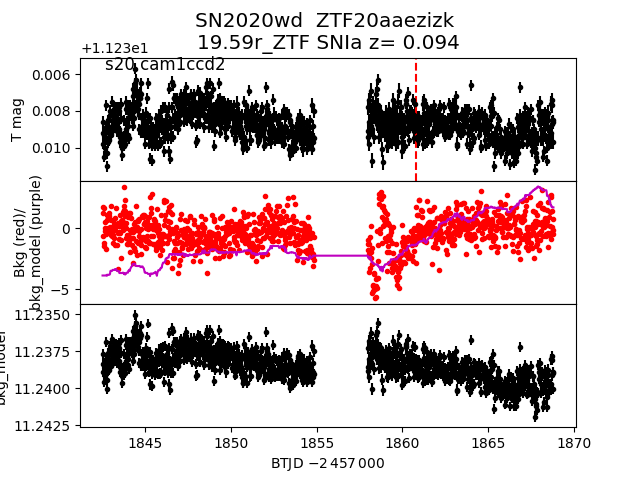 2020to 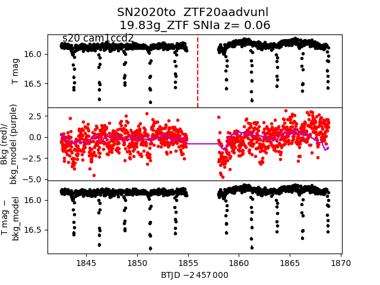 2020apm 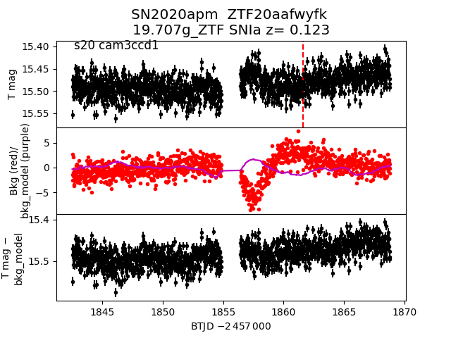 2020bdx 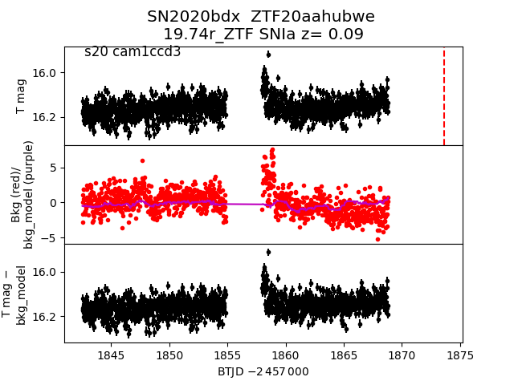 2020bqr 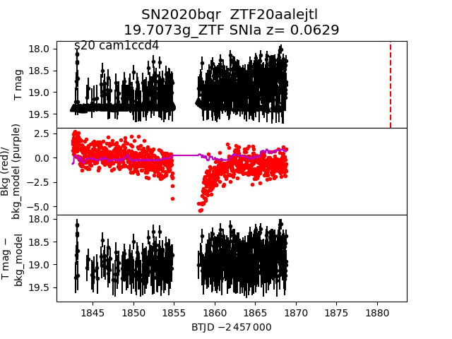 2020ht 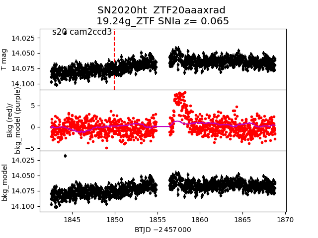 2020kq 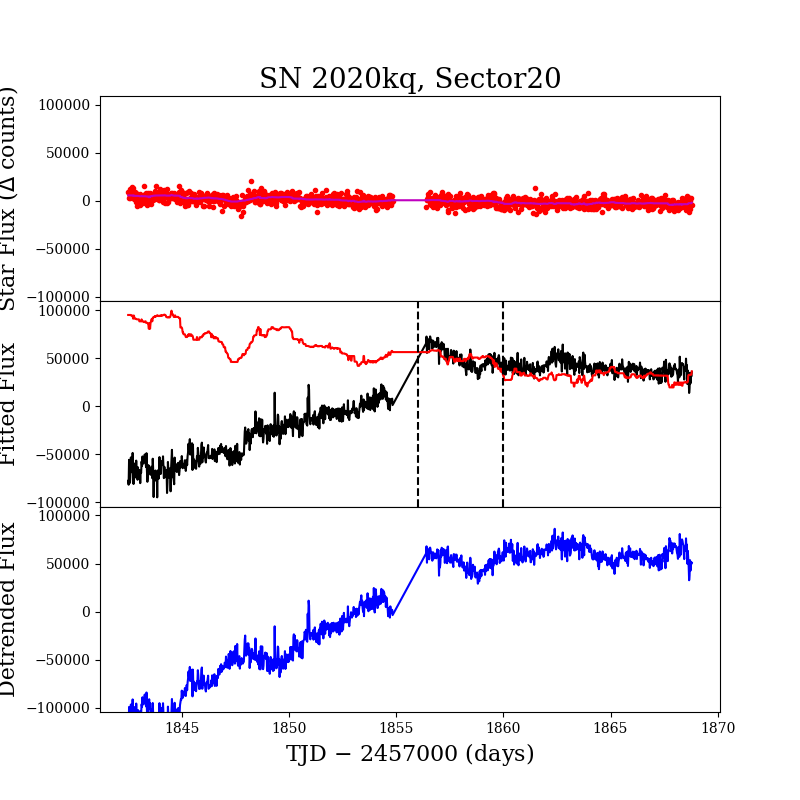 2020aem 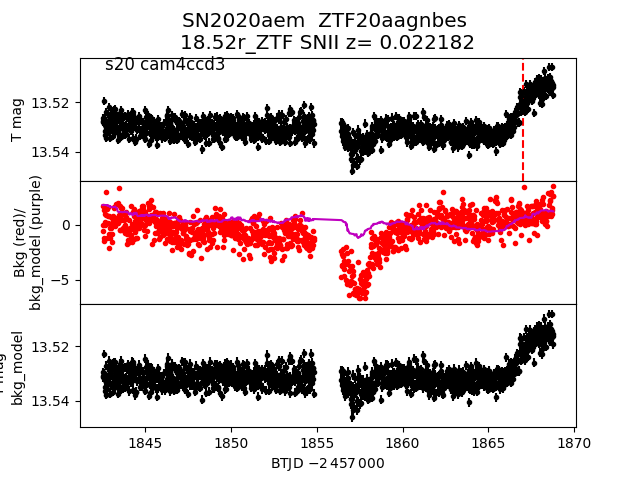 2020adw 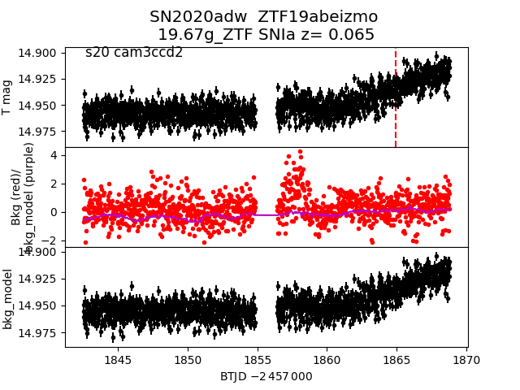 2020to 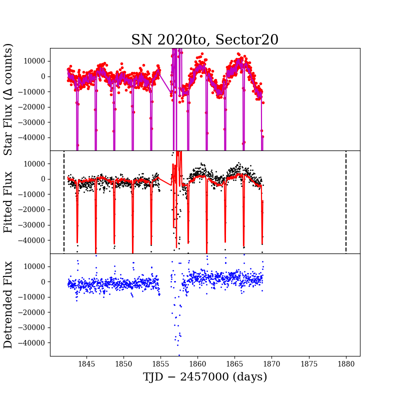 2020kt 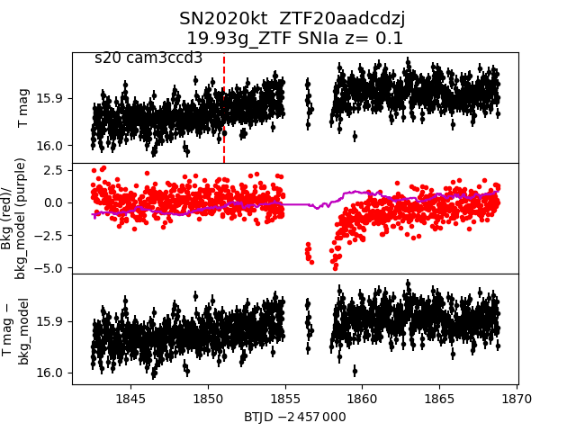 2020biz 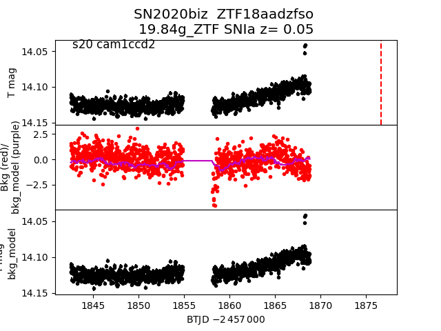 2020bj 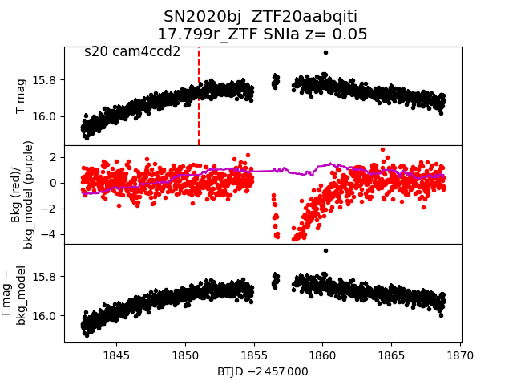 2020by 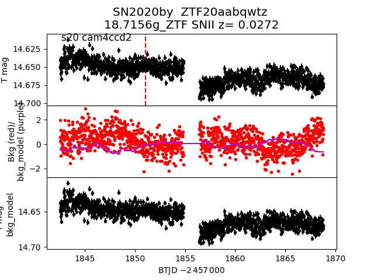 2020tn 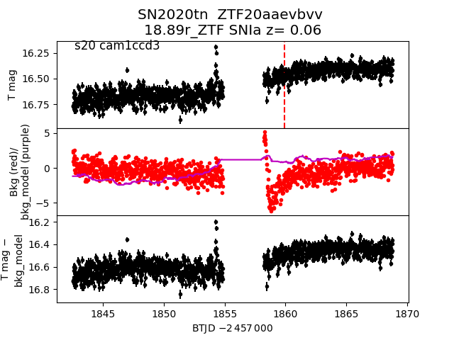 2020ut 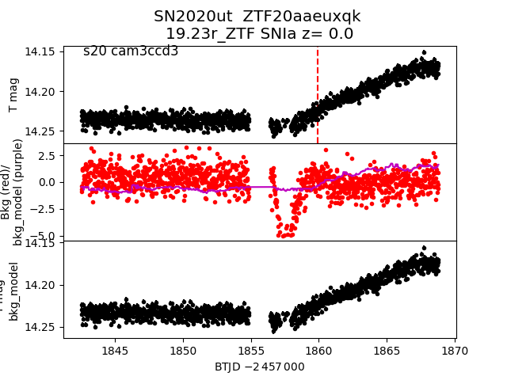 2020cc 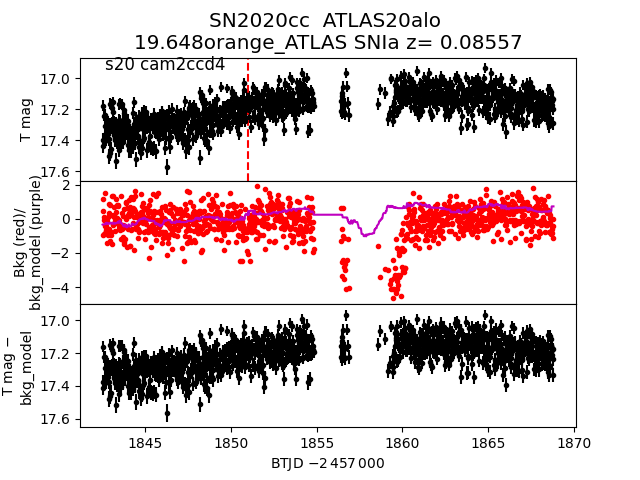 2020bol 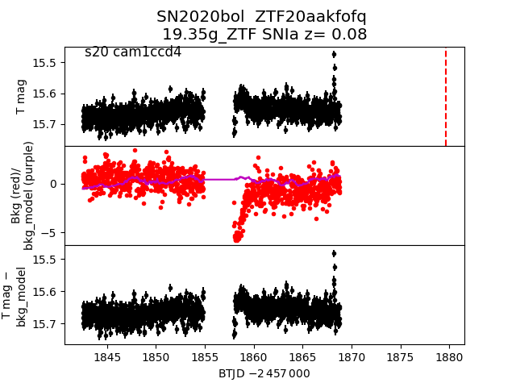 2020kq 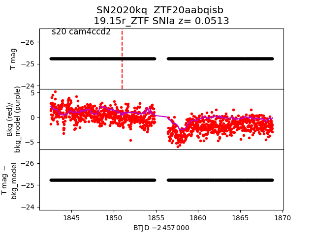 2020bja 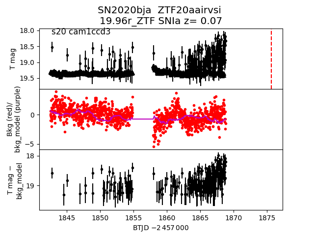 2020aan 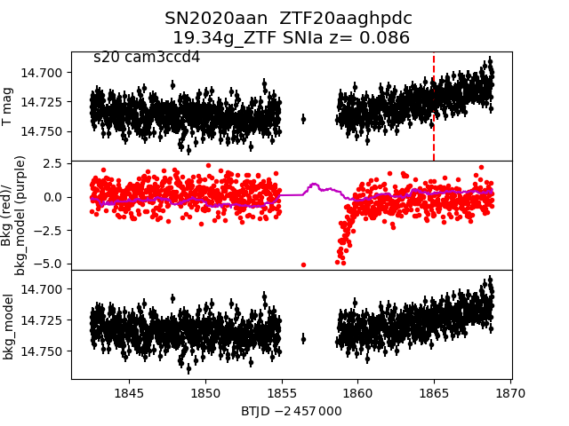